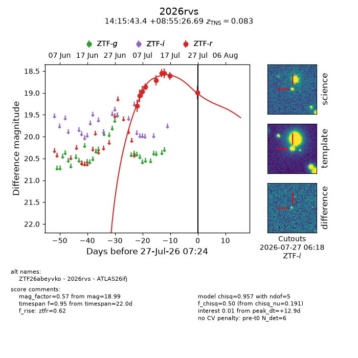
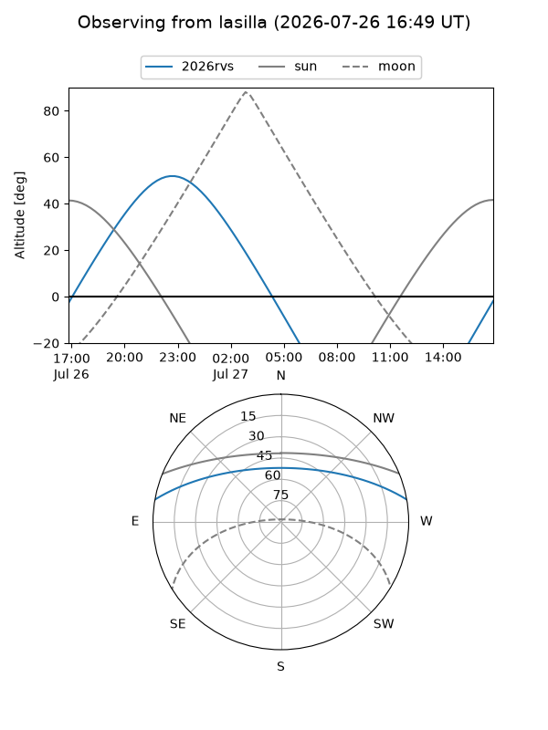
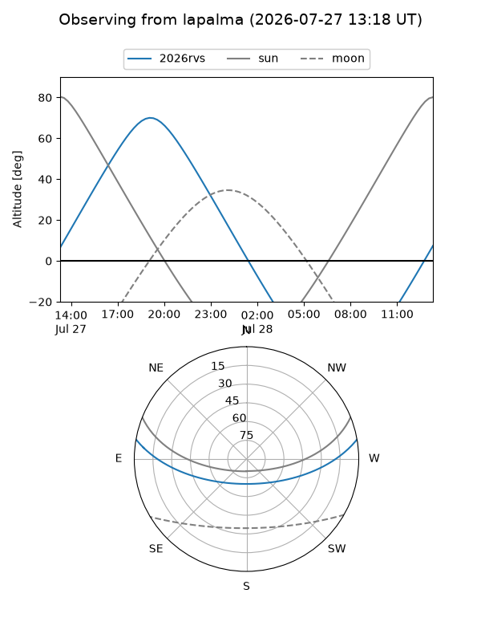
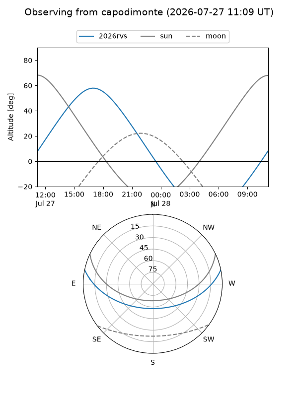
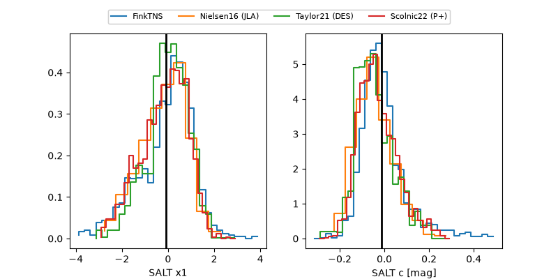

2026rvs
Target 2026rvs at 2026-07-27 07:26
Aliases and brokers:
FINK-ZTF: ztf.fink-portal.org/ZTF26abeyvko
Lasair-ZTF: lasair-ztf.lsst.ac.uk/objects/ZTF26abeyvko
ALeRCE-ZTF: alerce.online/object/ZTF26abeyvko
YSE-PZ: ziggy.ucolick.org/yse/transient_detail/2026rvs
TNS name: wis-tns.org/object/2026rvs
Direct TNS query: direct search
alt names
ZTF26abeyvko (ztf,fink_ztf)
2026rvs (tns,yse)
ATLAS26ifj (atlas)
Coordinates:
equatorial (ra, dec) = 213.9308,+8.92408
equatorial (HMS+DMS) = 14:15:43.40,+08:55:26.69
galactic (l, b) = (354.4555,+63.01927)
Flags:
TNS type: SN Ia
TNS redshift: 0.0830
peak dt: +12.9
Photometry:
last ztfr=18.99
9 ztfr detections
Lightcurve

Visibility



Additional plots
